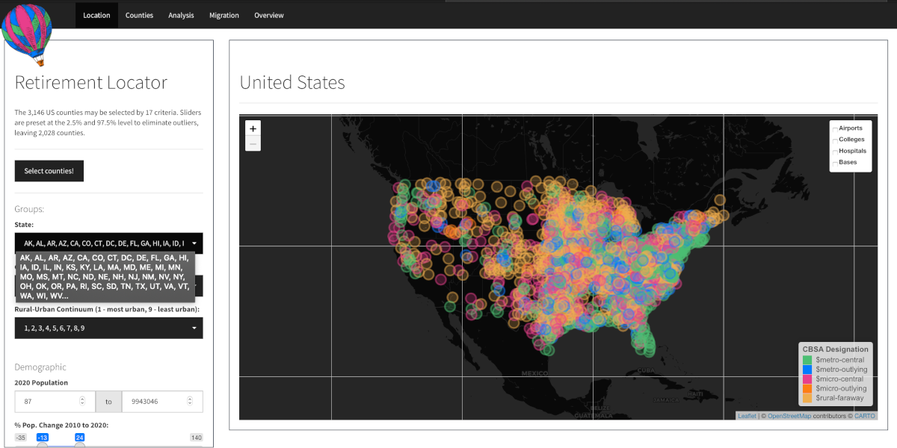

Retirement Locator Dashboard
The goal of retirementDash is to present pertinent and relevant criteria for selecting a retirement location in the United States. This project proceeded in two stages. The first stage was to create a county-level dataset retirementData, which is hosted in its own package and repository. The second stage was to display the data in an interactive, user-friendly dashboard, shown above.
Installation
You can install the development and experimental version of retirementDash from its repository with:
# Or the development version from GitHub:
# install.packages("devtools")
install_github("RobWiederstein/retirementDash")Usage
Step 1 Landing Page
The side panel provides 17 criteria to filter the 3,142 United States counties. The sliders were preset to the 2.5% and the 97.5% percentiles to eliminate outliers. With seventeen sliders set in a similar manner, only 2028 counties display when the select counties button is pushed.
The map contains an overlay for airports, colleges, hospitals and military bases. For those features to be displayed, the adjacent box must be checked.
Step 2 Counties Tab
The counties tab displays the filtered results in a tabular form. The user may select, sort and download the counties that meet his or her criteria.
Step 3 Analysis Tab
The user may use the x-axis and y-axis axis to create a scatterplot. Additional attributes for size and color are provided. This could be helpful in further refining the criteria on the landing page. For example, some parts of the United States have very high housing prices relative to household income, a variable named years_to_payoff. Users may then reset the inputs based upon the analyzer plot.
Acknowledgements
The following packages were indispensable to the both the retirementData and retirementDashprojects:
Code of Conduct
Please note that the retirementDash project is released with a Contributor Code of Conduct. By contributing to this project, you agree to abide by its terms.